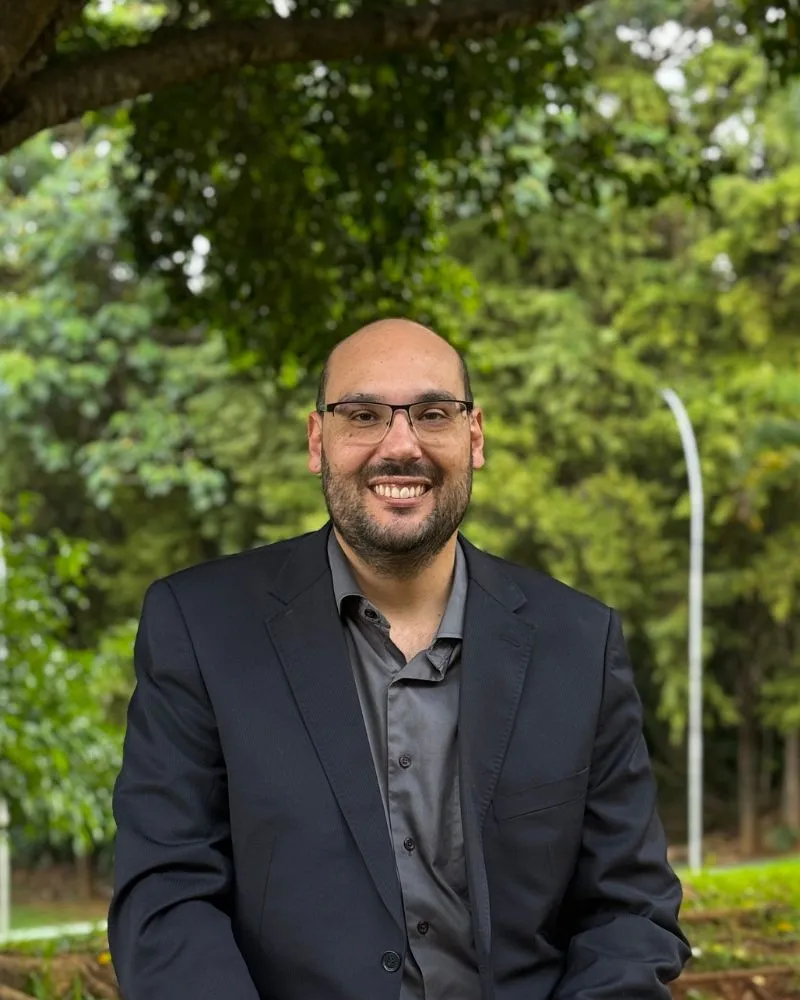

Atendimento particular exclusivo em Goiânia. Mais tempo, diagnóstico preciso e um plano de acompanhamento para evitar internações e restaurar a qualidade de vida.
Cuidar de quem amamos quando a saúde fragiliza é exaustivo. Você não precisa carregar esse peso sozinho.
O vai e vem exaustivo do hospital que desgasta o idoso, interrompe a rotina da família e não resolve o problema pela raiz.
O avanço de problemas de memória, a perda de massa muscular e o medo constante da perda da independência de quem você ama.
A dor física e emocional de um câncer ou doença grave, muitas vezes tratada com frieza pela medicina tradicional, focada apenas na doença e não na pessoa.
"Segundo as diretrizes da ANCP, internações recorrentes em idosos frágeis aceleram a perda de massa muscular de forma irreversível, aumentam drásticamente o risco de infecções hospitalares e causam desorientação severa (delirium)."
— O acompanhamento particular contínuo é a forma mais eficaz de prevenção.

Sou o Dr. Victor Hugo. Escolhi dedicar minha carreira ao atendimento particular porque acredito profundamente que volume não é qualidade. Meu modelo de cuidado foi desenhado para famílias que não aceitam atalhos quando se trata da vida.
O tempo necessário para ouvir sua história, entender seus anseios e avaliar minuciosamente todas as queixas, sem pressa.
Não passamos apenas "mais uma receita". Vamos na raiz do problema (sono, humor, perda muscular) para uma restauração real.
Relatórios médicos detalhados para os cuidadores e familiares, garantindo que todos saibam exatamente os próximos passos.
"Estudos clínicos comprovam: Cuidados Paliativos precoces em pacientes oncológicos não apenas reduzem drasticamente a dor, mas aumentam o tempo de sobrevida com qualidade e dignidade."
Assista aos vídeos abaixo para entender como o Dr. Victor Hugo transforma o acompanhamento médico em um projeto de vida e longevidade.
O objetivo final da medicina não é apenas adicionar dias à vida, mas vida aos dias.
"Paciente oncológico (neoplasia de cólon) que chegou com expectativa inicial de apenas 4 meses e dores agudas. Com o ajuste paliativo adequado, alcançou 11 meses de sobrevida com conforto absoluto, rodeado pela família."
"Após meses de sofrimento com o tratamento de um câncer de colo de útero, realizamos o controle preciso e singular dos sintomas. O alívio foi tão profundo que a paciente retomou seu maior desejo: voltou a cozinhar para os netos."
A Urgência de Agir Hoje
Segundo o IBGE, a população acima de 65 anos cresceu 57% na última década. O grande desafio atual já não é apenas envelhecer, é garantir que o envelhecimento seja independente, lúcido e livre de dores.
Conheça nossas modalidades de atendimento exclusivo.
Avaliação completa, diagnóstico investigativo e elaboração de plano terapêutico singular.
O conforto do atendimento de excelência no leito do paciente (Goiânia e região).
Gestão de saúde contínua (2 a 3 meses) focada em prevenção e manejo severo de sintomas, com suporte total via WhatsApp.
Para garantir a exclusividade que a sua família merece, nosso agendamento é feito de forma direta e pessoal pelo WhatsApp.
O Dr. Victor ou sua equipe retornarão o seu contato o mais breve possível para entender o seu caso e alinhar o plano ideal de acompanhamento.
Contato: (41) 8863-0813